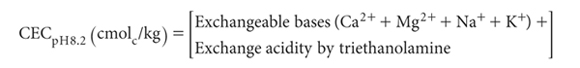

A base-saturated soil in equilibrium with excess CaCO3, and with a CO2 partial pressure equal to that of the atmosphere has a pH around 8.2. Soil CEC also reaches a point of relative constancy at this pH (Mehlich 1942).
This estimate of CECpH8.2 is not measured; it is calculated from the sum of exchangeable bases (Ca2+, Mg2+, Na+, K+; method is optional) plus exchange acidity by triethanolamine (Method 15H1), all expressed as cmolc/kg on an oven-dry basis. As with ECEC by 15J1, it is prone to positive errors if soluble bases are included in the estimate/measurement of exchangeable bases. Base saturation of CEC at pH 8.2 is used as one of the criteria in Soil Taxonomy (Soil Survey Staff 1975) for separating Alfisols and Ultisols.

Report CECpH8.2 [cmolc/kg], expressed on an oven-dry basis, noting the code for the method used for exchangeable bases.